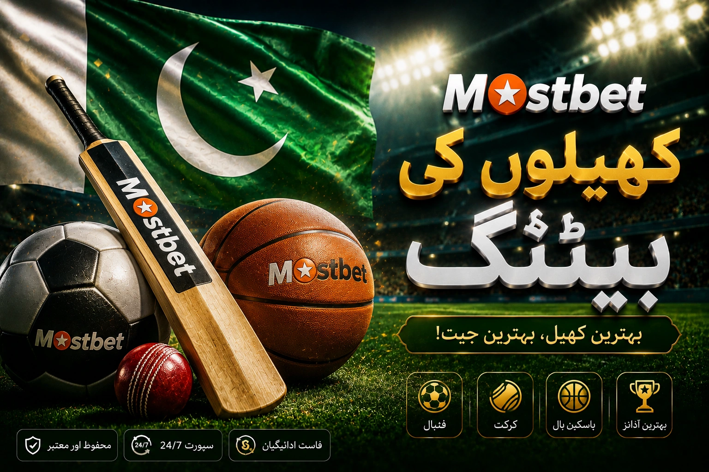

Coverage depth
Cricket and football lead the depth of markets on PK-facing pages, with tennis, basketball and other sports laid out under their own tabs.
A hands-on look at the Mostbet sportsbook covering market types, the gap between pre-match lines and in-play odds, the cash out option and the way sport-only promos sit separately from casino bonuses.

A compact summary flagging the parts of the ticket builder worth reviewing before confirmation, when odds and selections can still be adjusted on the fly.
| Element | What to check before confirmation | Why it matters for PK bettors |
|---|---|---|
| Sport and market | The match, the market type (1X2, totals, handicaps) and the exact selection | Avoids confused picks in a busy lobby during major cricket or football fixtures. |
| Odds value | The decimal odds shown at the moment the ticket is confirmed | The number can shift within seconds, especially during in-play action. |
| Stake plan | A pre-set amount per ticket, not adjusted in the heat of a live match | Keeps a budget across a long tournament rather than spending it on one evening. |
A quick routine before locking a sportsbook ticket prevents the kind of small mistakes that only start to look like bad luck once the match is already over.

Words such as 1X2 market, totals, handicap, decimal odds, in-play, cash out and free bet come up in many PK searches around the sportsbook. They are unpacked on this page in working language so each one ties to a real element on the ticket builder rather than sitting around as a buzzword.
The arrangement of blocks on this page is built differently from the casino lobby and from the promotions overview. Every inner page on the site keeps its own focus instead of reusing the same outline.
Sports promosThis page treats Mostbet sports betting as a concrete reader topic rather than a brand label. The idea is for a PK reader to pull apart market type, odds movement, in-play decisions and stake planning so each piece can be reviewed calmly on its own merits.
The paragraphs keep a working voice: which number to read first on the ticket, which condition tends to drift between selection and confirmation and where it makes sense to slow down before adding a leg to a parlay.
View app
The blocks below regroup the moving parts of the sportsbook without copying the structure used on casino or promo routes.
Cricket and football lead the depth of markets on PK-facing pages, with tennis, basketball and other sports laid out under their own tabs.
The odds appear in decimal format and can shift in seconds, so the figure printed on the ticket at confirmation is the one that locks the return.
Live odds update throughout the match across many markets, with selections opening and closing based on the current state of play.
View moreThe cash out button settles a ticket before the final whistle, with a partial value calculated from the current state of the open markets.
View morePick the route that matches your current question: slot library, live tables, Aviator, Lucky Jet, Mines or ongoing campaigns.
Pre-match odds are posted before the start and stay relatively steady, while live odds adjust in real time based on what is happening on the field. The same selection can carry very different numbers across the two formats.
Cash out lets the bettor close a ticket before the event ends, settling at a value calculated from the current odds. It can lock a partial return when the bet is winning or limit a loss when the match is heading the other way.
Sportsbook promos often arrive as free bets, odds boosts or risk-free wagers, with rollover tied to placed stakes and minimum odds, while casino bonuses use wagering on game spins. Reading both rule sets separately avoids surprise restrictions.
Demand drives depth. Cricket is the highest-volume sport in Pakistan searches, so operators publish more match-specific markets, in-play options and player props than for sports with lower local interest.